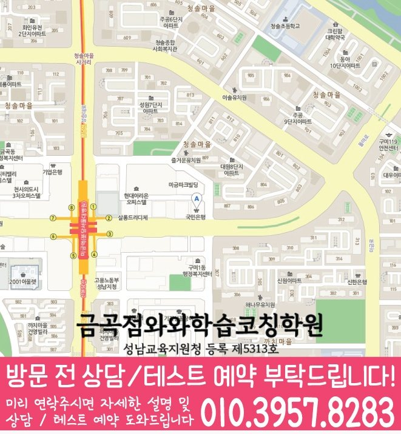

영어에서 막힌 부분
소리·단어·짧은 문장 읽기 가운데 혼자 설명하기 어려운 부분을 표시하세요. 단어를 몰랐던 것과 문장이나 답의 근거를 이해하지 못한 것을 구분합니다.
영어·수학 학습 점검
성남 금곡동 초등학생이 영어와 수학에서 막힌 부분을 따로 기록하고 다음 복습의 우선순위를 정하는 안내입니다. 와와학습코칭학원 미금점의 수강 조건은 두 과목을 각각 확인할 수 있습니다.
소리·단어·짧은 문장 읽기 가운데 혼자 설명하기 어려운 부분을 표시하세요. 단어를 몰랐던 것과 문장이나 답의 근거를 이해하지 못한 것을 구분합니다.
수의 뜻·연산·문장제 가운데 처음 막힌 지점을 남기세요. 개념을 설명하지 못한 것인지, 조건을 식으로 옮기거나 계산하는 과정에서 놓쳤는지 확인합니다.
틀린 개수만으로 두 과목을 비교하지 말고, 마감일과 반복되는 약점을 함께 보세요. 각 과목에서 다시 확인할 작은 범위를 정하고 혼자 해결했는지 기록합니다.
| 구분 | 살펴볼 내용 | 남길 기록 |
|---|---|---|
| 영어 | 소리·단어·짧은 문장 읽기 | 다시 읽거나 고친 뒤 이유 설명 |
| 수학 | 수의 뜻·연산·문장제 | 해설 없이 풀이 과정 다시 작성 |
| 함께 점검 | 학교 진도와 현재 교재 | 먼저 복습할 범위와 날짜 결정 |
학생이 스스로 공부를 정리하는 일반적인 방법이며, 지점의 실제 수업·숙제 운영을 설명하는 것은 아닙니다.
| 학년·과목 | 안내 학년 | 조건과 자세한 안내 |
|---|---|---|
| 초등 영어 | 초1~초6 | 초등 영어 수강 안내 |
| 초등 수학 | 초1~초6 | 초등 수학 수강 안내 |
자료의 안내 범위이며 현재 모집·개설 여부와 시간표는 별도 확인이 필요합니다. 영어와 수학을 함께 수강하려면 두 과목의 조건과 가능한 일정을 각각 상담해 주세요.
표는 제공된 지점 자료의 학년 범위입니다. 과목별 추가 조건과 현재 개설 여부, 가능한 시간표를 해당 수강 안내와 상담에서 확인해 주세요.
두 과목의 학년 범위를 따로 확인하세요. 한 과목의 안내 학년을 다른 과목에 적용하거나 두 과목의 동시 수강이 가능하다고 판단하지 말고, 배우려는 과목과 현재 학년을 각각 알려주세요.
마감일과 과목별 약점, 혼자 끝낼 수 있는 분량을 기준으로 정하세요. 완료한 범위와 오래 걸린 이유를 기록하고 다음 계획에서 분량과 복습 날짜를 조정해 보세요.
와와학습코칭학원 미금점으로 연결된 지점 안내에서 위치와 과목별 정보를 확인할 수 있습니다. 현재 학년과 희망 과목을 알려주고 010-6839-8283으로 전화 또는 문자 상담해 주세요.
제공된 학습 자료를 함께 볼 수 있습니다. 현재 수강 학년과 조건은 위의 지점 안내를 기준으로 확인해 주세요.
LOCAL ACADEMY GUIDE
성남 금곡동 초등 학생에게 영수 관리는 영어와 수학을 같은 방식으로 반복시키는 일이 아닙니다. 영어는 읽기·암기·문법·서술형을, 수학은 개념·유형·풀이 과정·오답 원인을 따로 확인해야 합니다. 이후 두 과목을 하나의 주간 플래너 안에 넣어 실제 생활 리듬에 맞게 조정할 때 꾸준함이 생깁니다.
최근 시험과 과제 수행 기록을 보면 먼저 보완해야 할 과목이 보입니다. 이 순서를 정해야 무리한 양 늘리기를 피할 수 있습니다.
같은 유형을 다시 틀린다면 단순 복습보다 개념 설명, 풀이 과정 점검, 암기 방식 수정이 먼저 필요할 수 있습니다.
영어 단어·문법·독해와 수학 개념·유형·오답을 분리해 학생의 출발점을 확인합니다.
학교 일정, 숙제량, 시험 범위를 반영해 영어와 수학 시간을 균형 있게 배치합니다.
완료 여부만 체크하지 않고, 막힌 이유와 다시 볼 문제를 정리해 다음 계획에 반영합니다.
성남 금곡동 초등 영수학원 페이지는 경기 성남시 금곡동 학생과 학부모가 영어·수학 학습 방향을 잡을 때 참고할 수 있도록 정리한 안내입니다. 실제 상담에서는 학생의 학년, 학교 진도, 최근 시험 결과, 공부 습관을 함께 확인해 더 구체적인 계획을 세웁니다.


SAME LOCAL PAGE
성남 금곡동 지역의 과목별·학년별 페이지 23개를 목적별로 묶었습니다. 필요한 조합을 펼쳐서 바로 이동해보세요.
수업을 알아볼 때 함께 살펴보세요
표와 그림 정리 · 질문 순서 정하기 등 선생님이 소개하는 학습코칭 방식을 읽고 상담할 내용을 정리해 보세요.
교육정보
현재 과제와 어려운 부분을 정리하고, 이어서 상담할 질문을 준비해 보세요.
새 학기 첫 주의 학교 일정과 이전 기초, 첫 과제와 확인 결과를 모아 공부 계획을 시작합니다.
개학 전에 과목별 대표 과제와 받은 도움, 생활 일정과 준비물을 함께 살피고 새 학기 질문을 정리해 보세요.
공부 시작까지 걸린 시간과 중단 이유를 기록해, 유지하기 어려운 습관의 조건을 하나씩 바꾸는 방법입니다.
학년별 공부 커리큘럼
학습 중점과 연습 예시를 읽고, 학교 진도와 학생의 이해에 맞춰 다음 과제를 정해 보세요.
공부를 준비하는 참고 안내입니다. 실제 개설 과목·학년은 지점에 확인하세요.
수강 상담 준비
학교 진도와 어려웠던 부분, 실제 가능한 시간을 준비해 미금점의 과목별 수강 조건과 현재 시간표를 확인해 주세요.